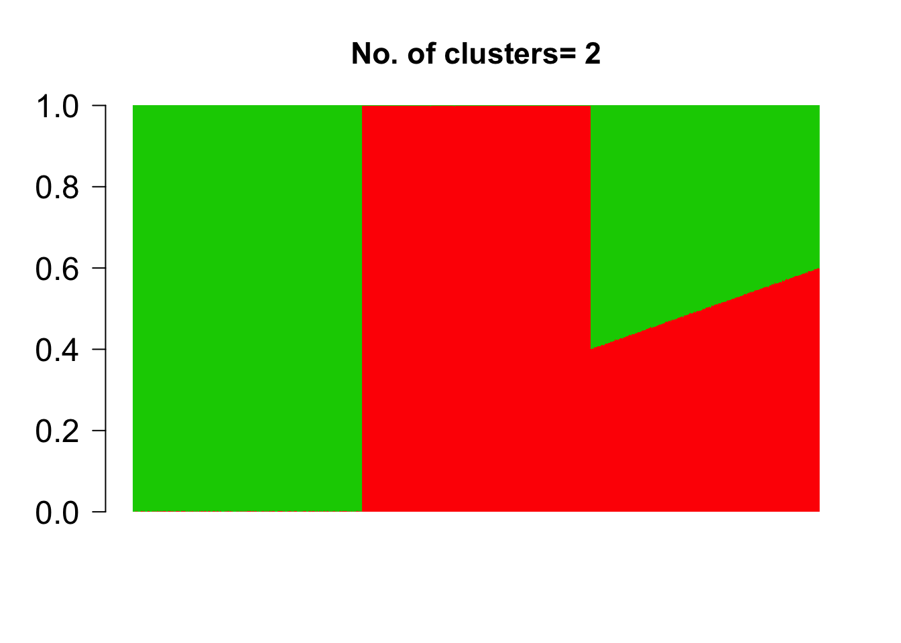

Simulation example : methClust
Kushal K Dey
11/29/2017
library(methClust)Example
Here we present a small demo of how methClust can be used to fit a Grade of Membership model on a simulated example. This example will be replaced with a more appropriate real example with the further development of this package.
We first define the grades of membership matrix \(\omega_{N \times K}\) where \(N\) is the number of samples and \(K\) is the number of clusters
n.out <- 500
omega_sim <- rbind( cbind( rep(1, n.out), rep(0, n.out)),
cbind( rep(0, n.out), rep(1, n.out)),
cbind( seq(0.6, 0.4, length.out = n.out),
1- seq(0.6, 0.4,length.out=n.out)) )
K <- dim(omega_sim)[2]
barplot(t(omega_sim),
col = 2:(K+1),
axisnames = F, space = 0,
border = NA,
main=paste("No. of clusters=", K),
las=1, ylim = c(0,1), cex.axis=1.5,cex.main=1.4)
Next we define the cluster profiles \(f_{K \times B}\) where \(0 \leq f_{kb} \leq 1\) and \(B\) denotes the number of genomic bins that the genome has been partitioned into.
m.out <- 200
freq_sim <- cbind(c(rep(0.8, m.out), rep(0.2, m.out), rep(0.5, m.out), rep(0.01, m.out)),
c(rep(0.01, m.out), rep(0.01, m.out), rep(0.5, m.out), rep(0.8, m.out)))We next define matrices for the number of methylated sites M and unmethylated sites U per sample annd per bin, which are assumed to obey Equation 1.
prob <- omega_sim %*% t(freq_sim)
Y <- matrix(rpois(dim(prob)[1]*dim(prob)[2], 1000), dim(prob)[1], dim(prob)[2])
M <- matrix(0, dim(Y)[1], dim(Y)[2])
for(m in 1:dim(Y)[1]){
for(n in 1:dim(Y)[2]){
M[m,n] <- rbinom(1, Y[m,n], prob = prob[m,n])
}
}
U = Y - MCheck the dimensions the methylation matrix M and the unmethylation matrix (they should be same).
dim(M)## [1] 1500 800dim(U)## [1] 1500 800Now we fit methClust
topics <- meth_topics(M, U, K=2, tol = 10, use_squarem = FALSE)##
## Estimating on a 1500 samples collection.
## log posterior increase: 112921576.8, 10933.8, 346.4, 347.9, 127.3, 38.2, 21.2, 14.6, 11.1, done.The esimated bar chart representation of the grades of membership are as follows
barplot(t(topics$omega),
col = 2:(K+1),
axisnames = F, space = 0,
border = NA,
main=paste("No. of clusters=", K),
las=1, ylim = c(0,1), cex.axis=1.5,cex.main=1.4)
This R Markdown site was created with workflowr